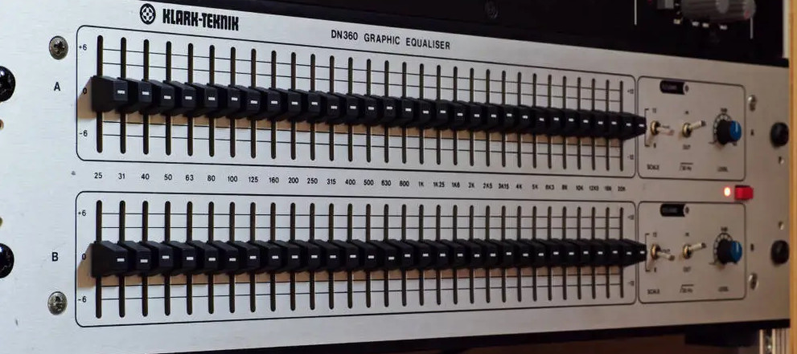
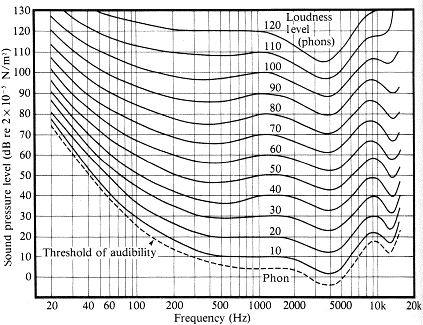
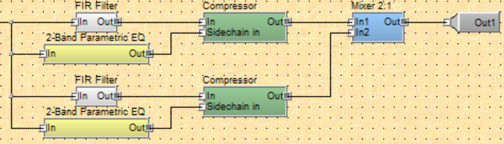

On the bench is a rack of 31-band graphic EQs next to a home-brew DSP board and a metal horn/driver combo. The question is how to get dynamic EQ without the phase smear of a graphic.
Linear phase EQ, part 1
First, let's talk about EQ in general. A few decades of running a sound rental left me with a huge collection of superfluous copies of several brands of 31-band graphic EQs. My personal favourite was a KT DN360.


What was — and still is? — the purpose of a 31-band EQ inserted in the mains of our PA? Often people start jabbing about room EQ, tuning a system to a room, or other semi-scientific nonsense, never leaving out a mention of phase issues.
Once you grow a bit more aware of what you are doing, you realise that the use of such a graphic has (had) two purposes: first, you use it in the creative process of doing your mix; second, you try to correct problems you experience with the current program material, the system and the level. The first is not at debate here; let's investigate the second.
Loudspeaker systems in general are giant distortion generators compared with electronics. To elaborate on the cause or specify what distortion would lead way too far in this article, just bear with me and understand that we are not talking about rattle and buzzes, but the harmonic distortion we sometimes also appreciate.
With this in mind, we could agree that the tweaking in the 2–4 kHz region on your graphic might be triggered by the perceived distortion, not the level. If you remember: you dipped that frequency because it was ugly, not because it was loud.
All analog EQs and the major part of their digital counterparts are minimum phase. Meaning: yes, every EQ setting will affect the phase in that region in a way associated with its magnitude response. Law of physics. Mostly no problem, as the thing you are correcting will be minimum phase too.
The example above: using your EQ to dip those ugly distortions will affect phase in a way you don't want. Maybe that is the reason you keep tweaking in that region during a difficult show.
Another reason why you keep changing EQ settings in that region could be Fletcher + Munson. Everybody knows these equal-loudness contours; the loudness button on your '70s hi-fi amp is a direct consequence.


Look closely in the 2–4 kHz region: not only is your hearing more sensitive in that area (duh), but that sensitivity also changes with level, both in frequency and amount. Go from 80 to 100 dB to get an idea.
Dynamic EQ without the smear
We have tried different solutions. I was never happy with any dynamic EQ or de-esser function on any compressor of any off-the-shelf product. Multiband compressor techniques are more something I could appreciate — true linear phase, that is! Here is an example of how I did this using a free programming platform like BSS Soundweb:
The signal is split into two pathways using linear-phase FIR filters. Great care was taken so that these filters, when recombined, don't affect the signal in any other way than adding some delay. Both paths are compressed with different attack, release, ratio and so on. The compressor is made more sensitive for the frequency of interest by using an EQ on the side chain; feeding its split before the FIR gives it some look-ahead.


Still not quite happy, as in: you don't want compressor action, you want EQ action. So recently I started to experiment with my home-brew DSP boards. I took a metal horn/driver combo; despite the felt damping it will have a ringing-bell-associated distortion, certainly if it is not mounted firmly in a box. (Still a really nice, controlled top end, though.)

..soon more.